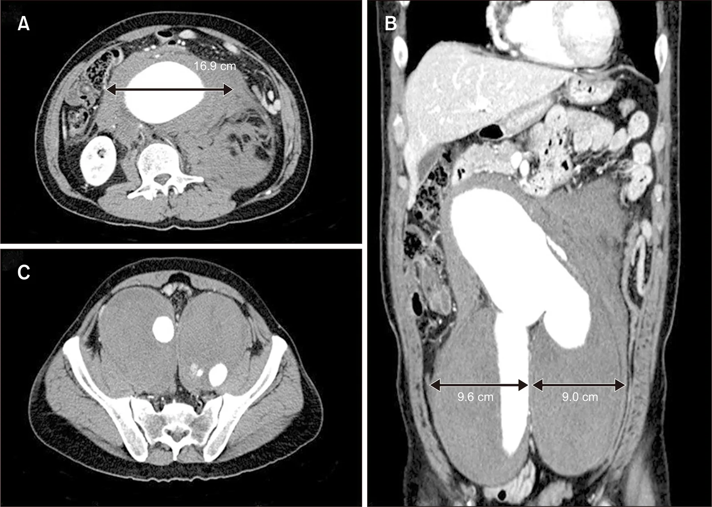
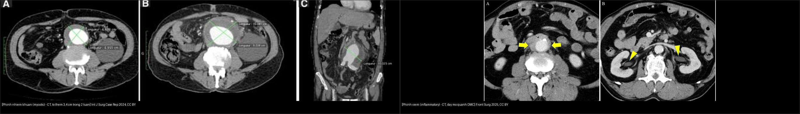
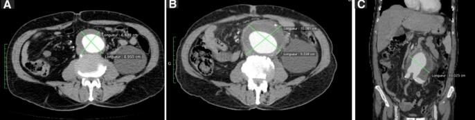
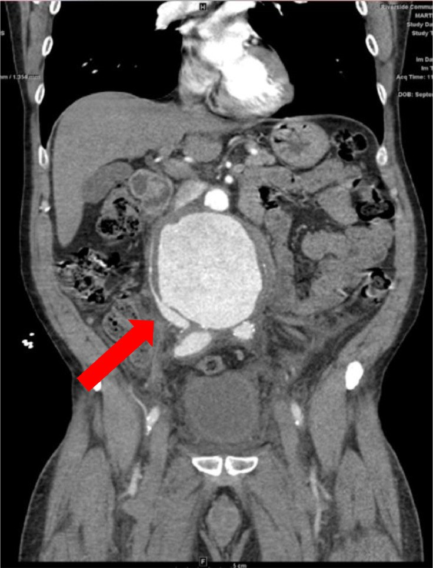
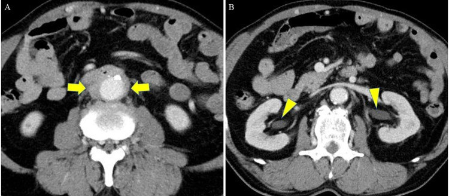
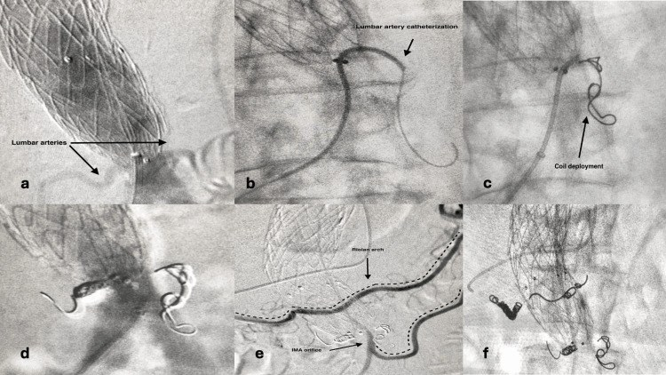

170 — Phình ĐMC bụng: dọa vỡ, vỡ, phình nhiễm khuẩn/viêm & rò / AAA: rupture, mycotic-inflammatory & fistula
Tags: pattern:phinh-DMC vung:DMC-bung protocol:CTA-DMC incidentaloma:phinh-DMC
Mức chắc chắn (certainty): tổng hợp y văn (literature synthesis) — tổng hợp guideline + ca nguyên văn có ảnh CC BY/BY-NC (ghi PMCID từng ảnh).
1. Tổng quan — đường kính, tốc độ tăng & cơ chế hình ảnh
- AAA = đường kính ngoài-ngoài ≥ 3,0 cm (hoặc > 50% đường kính đoạn chủ bình thường). Nguy cơ vỡ tăng theo đường kính; mổ chương trình khi ≥ 5,5 cm (nam) / ≥ 5,0 cm (nữ), hoặc tăng > 1 cm/năm, hoặc phình có triệu chứng. Ca nguồn khổng lồ trong bài: 16,9 cm.
- Cơ chế hình ảnh (TẠI SAO):
- Liềm tăng tỷ trọng (hyperdense crescent): huyết khối mới, cấp đậm độ cao trong lòng túi — dấu hiệu dọa vỡ. Cần phân biệt với vôi hóa thành (đậm hơn, có bờ cứng, không theo hình liềm mềm).
- Draped aorta: thành sau phình mất mặc định và ôm theo cột sống — dấu hiệu vỡ kín/dọa vỡ.
- Máu sau phúc mạc đậm độ cao (40–70 HU) quanh ĐMC = vỡ; khoang sau phúc mạc kín nên ép tạm một lúc rồi mất bù đột ngột.
- Phình nhiễm khuẩn (mycotic aortic aneurysm): thường dạng túi (saccular), mọc rất nhanh, dày mô mềm quanh ĐMC (viêm quanh mạch), khí trong thành (vi khuẩn sinh hơi), cấy máu dương. Ca nguồn: phình to thêm 3,4 cm trong 2 tuần + viêm quanh mạch mới xuất hiện → mổ + kháng sinh dài, không chờ đủ ngưỡng đường kính.
- Phình viêm (inflammatory AAA): thành dày xơ hóa trắng như sứ (porcelain), dày mô mỡ quanh ĐMC ("shaggy aorta"), dính tạng lân cận, hẹp/gãn niệu quản ứ nước; nhiều ca liên quan IgG4.
- Rò chủ–tĩnh mạch chủ (aortocaval fistula): vỡ kín của túi phình vào tĩnh mạch chủ dưới → suy tim cung lượng cao, phù chi dưới, đau bụng, có khi tiêu chảy máu.
- Rò chủ–tá tràng (aortoenteric fistula): nôn/máu trong phân + phình hoặc graft cũ; có thể có "xuất huyết báo trước" (herald bleed) rồi ồ ạt — mổ tối khẩn.

2. Gamut đau bụng + khối đập + tụt HA (Gamut)
- Vỡ AAA: máu sau phúc mạc + phình + sốc — mổ/EVAR cấp cứu (cho phép HA thấp).
- Dọa vỡ: liềm tăng tỷ trọng + draped + đau mới, phình ≥ 5,5 cm — mổ sớm chương trình.
- Phình nhiễm khuẩn (mycotic): dạng túi + mọc nhanh + viêm quanh mạch ± khí + sốt/cấy máu — mổ + kháng sinh.
- Phình viêm (inflammatory): thành dày + dày mô mỡ quanh ĐMC + ứ nước thận — steroid rồi mổ.
- Rò chủ–tĩnh mạch chủ: phình + dòng rõ thông ĐMC–tĩnh mạch chủ + suy tim — mổ.
- Rò chủ–tá tràng: nôn máu + phình/graft cũ + khí quanh ĐMC — mổ tối khẩn.
- Bóc tách lan xuống: flap + 2 lòng (nối bài 070) — khác vỡ phình.
3. Bảng so sánh phân biệt (ma trận đối chiếu)
| Thực thể (entity) | Hình ảnh điển hình (CTA/CT) | Chốt vào (rule-in) | Chốt loại (rule-out) | Gợi ý xác nhận |
|---|---|---|---|---|
| Vỡ AAA | Máu sau phúc mạc đậm độ cao + túi phình + mất liên tục thành | Tam chứng: đau + tụt HA + khối đập; máu sau phúc mạc cạnh phình | Không máu ngoài lòng + thành liên tục → chưa vỡ (dọa vỡ) | CTA cấp cứu; mổ/EVAR |
| Dọa vỡ | Liềm tăng tỷ trọng trong huyết khối + draped aorta + gián đoạn vôi hóa thành | Đau lưng/bụng MỚI + phình ≥ 5,5 cm + liềm | Vôi hóa thành mảnh (đậm, bờ cứng) không phải liềm máu | CTA, mổ sớm |
| Phình nhiễm khuẩn (mycotic) | Dạng túi, mọc nhanh (3,4 cm/2 tuần ca nguồn), dày mô mềm quanh ĐMC, có thể khí trong thành | Mọc nhanh + viêm quanh mạch mới + sốt/cấy máu (+) | Phình dạng thoi ổn định, không viêm quanh mạch → thoái hóa | Cấy máu, CTA theo dõi, mổ + kháng sinh |
| Phình viêm (inflammatory) | Thành dày xơ hóa "sứ" + dày mô mỡ quanh ĐMC ("shaggy") + ứ nước thận | Dày mô mỡ quanh ĐMC đều + hẹp niệu quản/ứ nước + IgG4 (±) | Khối mô mềm quanh ĐMC có bờ không đều, lan rộng → nghĩ u/di căn | CTA + IgG4; steroid rồi mổ |
| Rò chủ–tĩnh mạch chủ (aortocaval) | Đường rò thông ĐMC–tĩnh mạch chủ dưới, tĩnh mạch chủ dưới căng giãn sớm | Suy tim cung lượng cao + phù chi + dòng rò trên CTA | Chỉ máu sau phúc mạc, không thấy đường thông → vỡ thường | CTA; sửa mạch |
| Rò chủ–tá tràng (aortoenteric) | Phình/graft cạnh D3–D4 + khí/dày mô mỡ quanh ĐMC, thực quản–tá tràng bị kéo dính | Nôn máu + phình/graft cũ + herald bleed | Chỉ loét dạ dày–tá tràng, ĐMC bình thường → bệnh tiêu hóa | Nội soi (thấy rò), CTA; mổ tối khẩn |
| Bóc tách lan xuống | Flap nội mạc + 2 lòng, có/không huyết khối lòng giả | Flap + 2 lòng rõ | Lòng giả tắc hoàn toàn + không flap → phình dạng thoi | CTA; xử trí theo Stanford (bài 070) |

Dấu hiệu chốt cần đọc đúng trên CT/CTA
- Liềm tăng tỷ trọng: đám mờ đậm trong huyết khối ở phía sau/ngoài thành phình, có thể có kèm dày mô mỡ — dấu của máu mới, khác vôi hóa.
- Đo đúng đường kính: ngoài-ngoài (outer-to-outer) trên mặt phẳng vuông góc trục mạch, không đo nghiêng theo trục; báo cáo cả đường kính ngang và trước-sau.
- Rò chủ–tĩnh mạch chủ: tĩnh mạch chủ dưới ngấm thuốc sớm và căng giãn ở thì động mạch (do dòng rò) — dấu hiệu gián tiếp quan trọng khi đường rò nhỏ.
4. Protocol CTA + theo dõi
- CTA cấp cứu: cài đặt bolus-tracking tại ĐMC bụng; lát mỏng ≤ 1 mm, MPR theo trục mạch; không dùng thụt cản quang khi nghi phình. Ghi: đường kính, cổ phình (độ dài/đường kính/góc), có ảnh hưởng mạch thận–mạch tạng, dấu dọa vỡ, vôi hóa, huyết khối.
- Tầm soát: nam 65–75 tuổi có tiền sử hút thuốc nên siêu âm bụng một lần (USPSTF).
- Theo dõi (SVS 2018, Chaikof): phình 3,0–3,9 cm mỗi 3 năm; 4,0–4,9 cm mỗi 12 tháng; ≥ 5,0 cm mỗi 6 tháng; theo dõi sát hơn nếu có yếu tố nguy cơ vỡ.
- EVAR vs mổ mở: chọn theo hình thái cổ phình/tuổi bệnh nhân. Sau EVAR theo dõi endoleak — phân loại I/V (dòng từ miệng nối/gắn kết), II (mạch nhánh ngược dòng: thắt lưng, mạc treo dưới), III (hở giữa mảnh ghép), IV (độ thấm mảnh ghép), V (căng túi không rõ nguồn). Type II phần lớn theo dõi; can thiệp khi túi phình TĂNG — nút coil mạch thắt lưng/Riolan (ca nguồn).
- Sơ đồ quyết định:
flowchart TD
A[Phình ĐMC bụng phát hiện] --> B{Đường kính / tốc độ}
B -->|3,0-3,9 cm| C[Theo dõi 3 năm]
B -->|4,0-4,9 cm| D[Theo dõi 12 tháng]
B -->|≥ 5,0 cm| E[Theo dõi 6 tháng + cân nhắc mổ]
B -->|≥ 5,5 cm nam / 5,0 cm nữ, hoặc tăng > 1 cm/năm| F[Mổ mở / EVAR]
A --> G{Dấu hiệu nguy hiểm}
G -->|Liềm đậm + draped + đau mới| H[Dọa vỡ: mổ sớm]
G -->|Máu sau phúc mạc| I[Vỡ: mổ/EVAR cấp cứu, cho phép HA thấp]
G -->|Dạng túi + mọc nhanh + viêm quanh mạch| J[Nhiễm khuẩn: kháng sinh + mổ]
G -->|Nôn máu + graft cũ| K[Rò chủ-tá tràng: mổ tối khẩn]
F --> L[Sau EVAR: theo dõi endoleak]
L -->|Type II không tăng túi| M[Theo dõi]
L -->|Túi TĂNG| N[Nút coil mạch nhánh]
5. Biến thể bình thường và cạm bẫy
- Đau lưng + phình chưa vỡ dễ tưởng thoát vị đĩa đệm — sờ mạch đùi + CTA khi nghi ngờ.
- Máu sau phúc mạc do nguyên nhân khác (vỡ u thận, viêm tụy hoại tử, chấn thương) — luôn tìm túi phình/graft kèm.
- Phình viêm giả u sau phúc mạc: dày mô mềm quanh ĐMC dễ bị đọc là u/di căn hạch → nhận diện hình "shaggy" đều quanh mạch + IgG4.
- Vôi hóa thành vs liềm máu: vôi hóa đậm hơn, bờ cứng, thường nhiều ổ; liềm máu là dấu mềm, một dải, kèm dày mô mỡ mới.
- Endoleak type II: phần lớn lành tính — đừng can thiệp chỉ vì có endoleak, chỉ can thiệp khi túi phình tăng dần (ngưỡng trong ca nguồn: nút coil mạch nhánh).
- Mycotic cần mổ sớm hơn ngưỡng đường kính — chờ đủ 5,5 cm là sai lầm; hình dạng túi + tốc độ mọc là chốt.
6. Tự lượng giá — Blind Quiz
Ca 1 — Nam 72 tuổi, đau bụng dữ + tụt HA + khối đập. Đọc CTA.
- Gợi ý lâm sàng: sốc, khối đập vùng rốn.
- Câu hỏi: Đường kính bao nhiêu? Máu ở đâu? Mổ mở hay EVAR ở ca này? Vì sao?
Bấm để hiện đáp án (findings + chẩn đoán)
- Dấu hiệu (findings): phình vỡ khổng lồ 16,9 cm + phình chậu 2 bên + máu sau phúc mạc.
- Chẩn đoán (diagnosis): vỡ AAA. Ở ca này chọn mổ mở (phình chậu 2 bên mất vùng gắn kết an toàn cho EVAR + dính), cho phép huyết áp thấp đến khi kiểm soát chảy máu.
- Nguồn ảnh: Lee SS et al., Vasc Specialist Int 2026 (PMC13621216, Fig. 1), CC BY-NC 4.0.
Ca 2 — Nam 68 tuổi, phình theo dõi, đau bụng mới. Hai lần CT cách 2 tuần. Đọc CT.

- Gợi ý lâm sàng: phình đang theo dõi, xuất hiện đau + sốt nhẹ.
- Câu hỏi: Tốc độ mọc? Dấu hiệu nào gợi nhiễm khuẩn? Xử trí?
Bấm để hiện đáp án (findings + chẩn đoán)
- Dấu hiệu (findings): (A) phình lúc đầu không dấu viêm; (B) sau 2 tuần to thêm 3,4 cm kèm viêm quanh mạch (dày mô mỡ quanh ĐMC); (C) ảnh dựng hình vành.
- Chẩn đoán (diagnosis): phình nhiễm khuẩn (mycotic AAA) — tốc độ mọc rất nhanh + viêm quanh mạch mới. Không chờ đủ ngưỡng đường kính: mổ + kháng sinh dài, cấy mô quanh mạch.
- Nguồn ảnh: Bashour G et al., Int J Surg Case Rep 2024 (PMC11284370, Fig. 1), CC BY 4.0.
Ca 3 — Nam 70 tuổi, đau bụng + phù chi dưới + suy tim. Đọc CTA.

- Gợi ý lâm sàng: phình 8 cm, phù hai chân, khó thở.
- Câu hỏi: Vì sao suy tim trong khi "chỉ có phình"? Tìm đường thông ở đâu?
Bấm để hiện đáp án (findings + chẩn đoán)
- Dấu hiệu (findings): túi phình lớn; ảnh axial CTA (Fig. 3 cùng bài) thấy đường rò thông giữa ĐMC và tĩnh mạch chủ dưới.
- Chẩn đoán (diagnosis): phình viêm + rò chủ–tĩnh mạch chủ dưới (aortocaval fistula) — dòng rò lớn gây suy tim cung lượng cao; phù chi do tăng áp tĩnh mạch. Cần sửa mạch để đóng dòng rò.
- Nguồn ảnh: Pham R et al., Radiol Case Rep 2024 (PMC10628783, Fig. 2), CC BY 4.0.
Ca 4 — Nam 66 tuổi, nôn máu + có tiền sử phình ĐMC nhỏ 30 mm. Đọc CT.

- Gợi ý lâm sàng: xuất huyết tiêu hóa, phình bé (30 mm) nhưng có viêm quanh mạch.
- Câu hỏi: Vì sao phình chỉ 30 mm mà đã gây triệu chứng? Chẩn đoán và xử trí?
Bấm để hiện đáp án (findings + chẩn đoán)
- Dấu hiệu (findings): phình dạng thoi dưới thận 30 mm kèm dày mô mỡ quanh ĐMC (mũi tên vàng A, đầu mũi tên vàng B) — phình viêm; mổ thấy thành ĐMC cứng "như sứ", dính.
- Chẩn đoán (diagnosis): phình viêm (IAAA) gây rò chủ–tá tràng nguyên phát — dày thành/dính vào tá tràng tạo lỗ rò, gây nôn máu. Ngưỡng đường kính không bảo vệ được: mổ tối khẩn (sửa mạch + xử trí tá tràng).
- Nguồn ảnh: Akabane K et al., Front Surg 2025 (PMC12245851, Fig. 1), CC BY 4.0.
Ca 5 — Bệnh nhân sau EVAR, túi phình tăng dần, CTA thấy endoleak. Đọc DSA can thiệp.

- Gợi ý lâm sàng: sau EVAR nhiều tháng, túi phình không nhỏ lại mà tăng.
- Câu hỏi: Loại endoleak? Vì sao phải can thiệp ca này? Kỹ thuật?
Bấm để hiện đáp án (findings + chẩn đoán)
- Dấu hiệu (findings): DSA — mạch thắt lưng nuôi ngược dòng vào túi phình (a–d) và vòm Riolan từ mạc treo tràng trên nuôi ngược mạch mạc treo tràng dưới (e–f); thả coil vào các nhánh.
- Chẩn đoán (diagnosis): endoleak type II (dòng ngược từ nhánh mạch). Bình thường type II được theo dõi; can thiệp vì túi phình TĂNG — nút coil mạch thắt lưng và/hoặc mạch mạc treo dưới, có thể qua vòm Riolan.
- Nguồn ảnh: Giagtzidis I et al., Cureus 2024 (PMC11457928, Fig. 3), CC BY 4.0.
Ca 6 — So sánh phình nhiễm khuẩn và phình viêm trên ảnh ghép.
- Câu hỏi: Dấu hiệu nào chốt nhiễm khuẩn? Dấu hiệu nào chốt viêm? Vì sao xử trí khác nhau?
Bấm để hiện đáp án (findings + chẩn đoán)
- Nhiễm khuẩn: dạng túi + mọc nhanh (3,4 cm/2 tuần) + viêm quanh mạch mới → kháng sinh + mổ, không chờ ngưỡng đường kính.
- Viêm: thành dày xơ hóa "sứ" + dày mô mỡ quanh ĐMC đều + ứ nước thận → steroid trước, rồi mổ; hay liên quan IgG4.
- Nguồn ảnh: ghép từ ảnh trái — Bashour G et al., Int J Surg Case Rep 2024 (PMC11284370, Fig. 1), CC BY; ảnh phải — Akabane K et al., Front Surg 2025 (PMC12245851, Fig. 1), CC BY 4.0. Ảnh ghép letterbox giữ tỷ lệ.
Bài liên quan chéo
- 100 – Tổng quan hệ Bụng
- 070 – PE & ĐMC ngực (bóc tách)
- 140 – Chấn thương tạng đặc (máu sau phúc mạc)
- 205 – Can thiệp mạch (IR) (nút mạch/coil)
Không dùng để chẩn đoán độc lập khi chưa có người hướng dẫn.